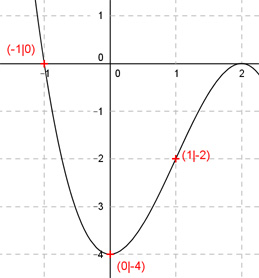

Aufgabe 49 Der Graph einer ganzrationalen Funktion 3. Grades schneidet die x-Achse an der Stelle x = -1, die y-Achse bei y = -4 und hat einen Wendepunkt bei (1|-2). Wie lautet seine Funktionsgleichung?  Allgemeine Form einer ganzrationalen Funktion 3. Grades: f(x) = ax3 + bx2 + cx + d f’(x) = 3ax2 + 2bx + c f’’(x) = 6ax + 2b 4 Bedingungen: 1. Schneidet die x-Achse an der Stelle x = -1 bedeutet: f(-1) = 0 --> a * (-1)3 + b * (-1)2 + c * (-1) + d = 0 --> -a + b - c + d = 0 I 2. Schneidet die y-Achse an der Stelle y = -4 bedeutet: f(0) = - 4 --> a * 03 + b * 02 + c * 0 + d = -4 --> d = -4 3. Hat einen Wendepunkt bei (1|-2) bedeutet zum einen (d = -4 eingesetzt): f(1) = - 2 --> a * 13 + b * 12 + c * 1 - 4 = -2 | +4 --> a + b + c = 2 II 4. Hat einen Wendepunkt bei (1|-2) bedeutet zum anderen: f’’(1) = 0 --> 6a * 1 + 2b = 0 --> 6a + 2b = 0 III I (d = -4 eingesetzt) + II -a + b - c - 4 = 0 a + b + c = 2 -------------------- 2b - 4 = 2 |+4 2b = 6 |:2 b = 3 b = 3 in III eingesetzt: 6a + 2 * 3 = 0 |-6 6a = -6 |:6 a = -1 a = - 1 und b = 3 in II eingesetzt: -1 + 3 + c = 2 2 + c = 2 |-2 c = 0 Gesuchte Funktionsgleichung: f(x) = -x3 + 3x2 - 4